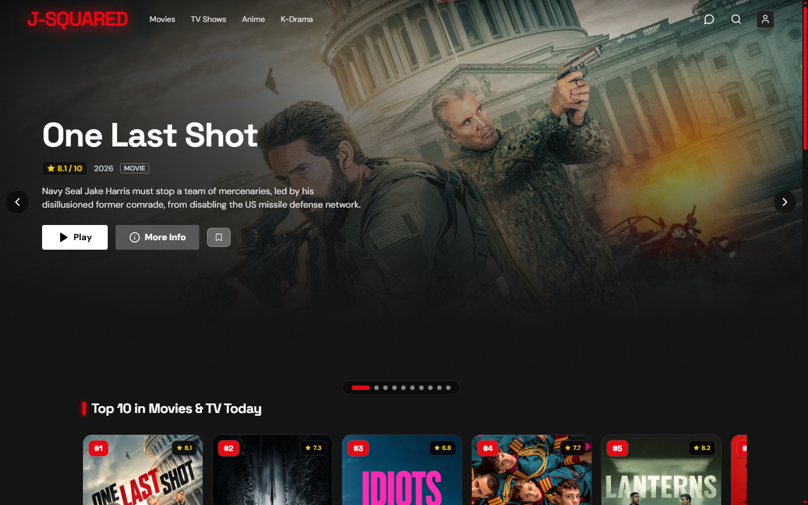
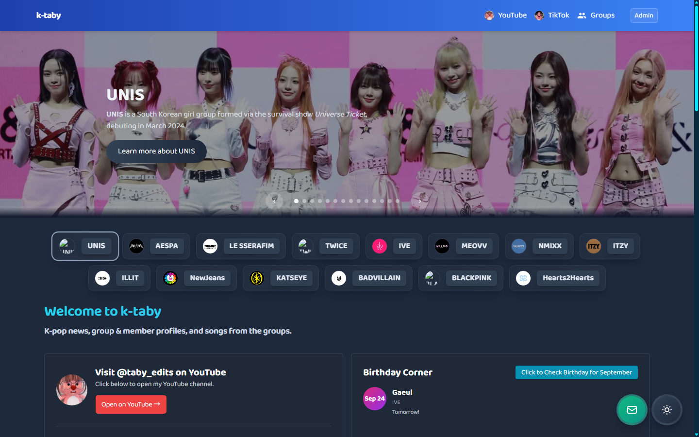

Computer Science Graduate · IT Systems Support & Technical Solutions
A Computer Science graduate from De La Salle University - Dasmariñas who is passionate about IT systems, hardware troubleshooting, and network operations backed by hands-on internship experience resolving helpdesk tickets at SMDC, maintaining web platforms at Knowles Training Institute, and executing digital campaigns for ORIGIN.
Academic capstones and self-driven software projects showcasing full-stack development, API integrations, edge computer vision, and healthcare workflows.
https://jjsquared.vercel.app/
LIVE SITE

Next.jsReactTailwind CSSTMDB Public APIVercel
JSquared Cinema — Media Streaming Platform
Dynamic entertainment and media discovery web app deployed on Vercel. Integrates the TMDB API to deliver real-time movies, TV series, anime, and Korean dramas with Netflix-inspired UI carousels, genre filtering, and watchlist persistence.
https://ktabys.vercel.app/
LIVE SITE

Next.jsReactTailwind CSSYouTube APIVercel
KTaby — Community Portal & Media Hub
Comprehensive K-Pop discovery portal and fan community platform. Features dynamic idol profiles, real-time birthday calculation, discography tracking, and direct integration with YouTube video edits (@taby_edits) for immersive streaming.
Autonomous computer vision safety system utilizing Google MediaPipe 33-point skeleton landmark extraction and an LSTM neural network. Detects and classifies accidental falls in real-time with 99.0% confidence while preserving personal privacy.
Full-stack clinical workflow and patient booking system. Features role-based access control (RBAC), multi-doctor schedule management, collision-free slot allocation, and automated confirmation pipelines for medical facilities.
Academic Excellence
Education & Honors
De La Salle University - Dasmariñas
Bachelor of Science in Computer Science
Major in Intelligent Systems
Magna Cum Laude
August 2022 – August 2026
Graduated with Magna Cum Laude honors. Rigorous curriculum covering Operating Systems, Computer Networks & Data Communications, Systems Architecture, Database Management Systems, Edge Computer Vision, Intelligent Systems, and Software Engineering.
Internship & Industry Track
Work Experience
Enterprise IT helpdesk support, workstation infrastructure maintenance, and freelance digital campaign media.
Enterprise Helpdesk
Stefanini
September 2026 – Present · Pasay City, PH
Helpdesk Technician I
Deliver multi-channel technical support to end-users across telephone, email, and live web chat streams.
Execute restorative and maintenance troubleshooting workflows to resolve hardware, OS, and software issues.
Track, categorize, and log incidents and service calls accurately within enterprise ITSM ticketing databases.
Apply standardized diagnostic procedures for PC hardware maintenance, user accounts, and applications like Outlook.
Global Media
ORIGIN
May 2026 – Present · Los Angeles, CA (Remote)
Freelance Content Creator & Campaign Specialist
Created and produced promotional digital media assets for artist campaigns and entertainment groups.
Managed video editing and asset formatting pipelines tailored for cross-platform online distribution.
Collaborated remotely with creative teams across timezones to ensure timely digital campaign delivery.
Enterprise IT
SM Development Corp.
June 2025 – August 2025 · Pasay City, PH
Technical Support Intern
Deployed and maintained computer systems, workstations, and hardware peripherals for personnel across company departments.
Managed hardware device inventory and technical documentation to ensure organized equipment management.
Resolved IT support tickets promptly through efficient troubleshooting, minimizing user and system downtime.
Collaborated directly with technical vendors to coordinate hardware component replacements and workstation upgrades.
Systems Admin
Knowles Training Institute
June 2024 – August 2024 · Singapore (Remote)
IT Team Lead Assistant Intern
Maintained, updated, and optimized multiple corporate WordPress websites for high performance and security.
Assisted in IT administrative workflows, streamlining weekly operational reports and verification logs.
Managed digital offboarding documentation, specifically creating and issuing verified completion certificates for interns.
Motion Graphics & Creative Media
Video Editing & Motion Design
From childhood curiosity to classroom editor, content creator on TikTok (@tabby_edits & @teletaby_edits) and YouTube (@taby_edits), and international campaign editor for ORIGIN. Engineered in Adobe After Effects, Premiere Pro, and CapCut.